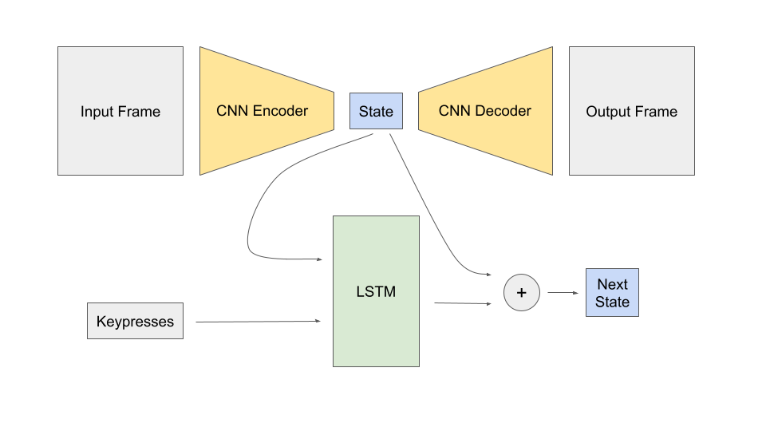

This 6.8M parameter model performs inference in the browser to simulate the game QWOP. It is trained on simulated QWOP games using random keypresses, and in total took <1 hour to train on an Nvidia L4 GPU.
An autoencoder and LSTM are present in this model. First, the autoencoder is trained to compress a 96x96x3 RGB game image into a 16-element state vector. Then, the LSTM predicts the next state based off the current state and keys pressed. Essentially, the model looks like this:
The encoder has four Conv2d layers followed by a LayerNorm followed by two Linear layers, and the decoder has two Linear layers followed by four ConvTranspose2d layers. The next state predictor consists of three LSTM layers followed by four Linear layers, and it outputs the predicted difference between the current state and next state.
In total, just under 700 MB of data compressed using GZIP was collected for training using Playwright to generate QWOP simulations from here using semi-random keypresses.
For the autoencoder, 45000 frames of QWOP were used, while for the LSTM, 36000 episodes of 256 frames each were collected, for over 9 million frames. This is one reason the autoencoder was trained separately from the LSTM, so that the frames could be compressed prior to storage using the autoencoder.
Three different loss functions are used for the autoencoder.
First, pure MSE loss is used due to its stability, then once adequate performance is obtained, the other two losses are added to the MSE loss.
For the LSTM, a weighted MSE loss between the true next state and the predicted next state is used. First, for each of the 16 features, the mean and standard deviation of the difference between adjacent frames is calculated. Then, the LSTM outputs a feature-normalized difference, which is unnormalized using the means and standard deviations for each feature and added to the current state. Then, the reciprocal of the standard deviations is used as weights for the MSE.
To increase stability and reduce overfitting, noise is added during both the training of the autoencoder and LSTM.
For the autoencoder during training, after encoding, each feature is multiplied by a random variable with mean 1 and standard deviation 0.05. This encourages the autoencoder to evenly distribute frames into its latent space. The LSTM is also trained with noise for each feature equal 10 percent of the standard deviation of the frame differences.
On my laptop running Chrome, I was able to get a theoretical maximum FPS of approximately 60. Training was done using Modal's free plan running on an L4 GPU for under an hour. A total of ~$20 of free credits was used in development/testing, and the final model was trained using less than $1. Data generation occurs at about 1000 episodes of 256 per hour, for a total of 36 hours of data generation occuring on my laptop.